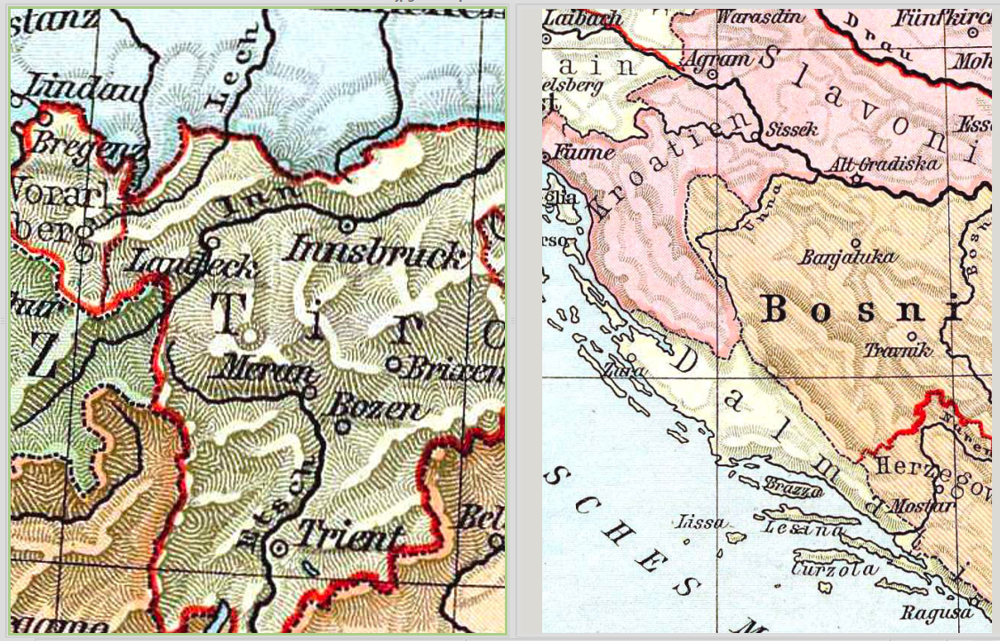
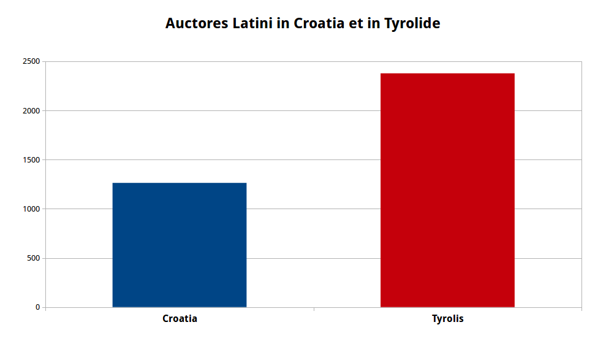
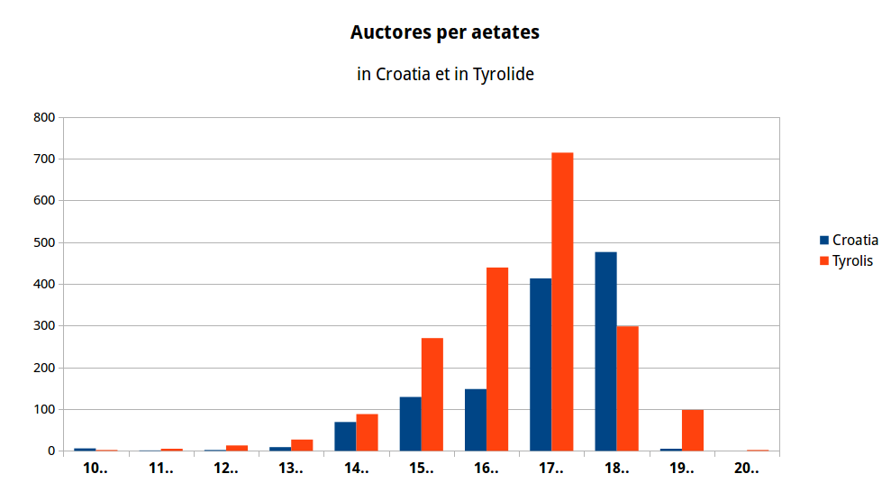
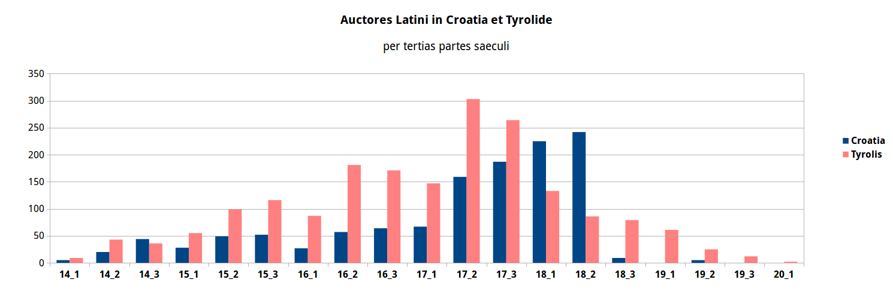
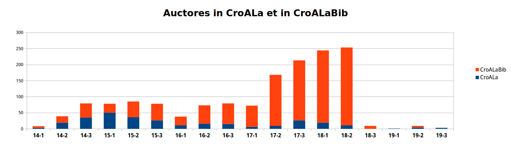
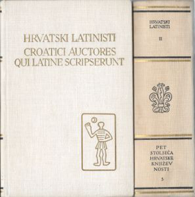

Neven Jovanović / neven.jovanovic@ffzg.hr, Facultas philosophica Universitatis Zagrabiensis
Societatis Internationalis Studiis Neolatinis Provehendis Conventus sextus decimus
Vindobonae, die 6 Augusti 2015
Croatica et Tyrolensia: litterae Latinae Croatiae et Tyrolidis computatro comparandae
Huius paginae inscriptio interretialis:
croala.ffzg.unizg.hr/sunoikisis/jovanovic-ianls-descriptorum.html
Etiam in Github; praelectionis textus; PDF.


solr.ffzg.hr/basex/indexauctorum/croalabib
solr.ffzg.hr/basex/indexauctorum/tei-tyrolis

Fons: solr.ffzg.hr/basex/auctores/periodi2.


CroALa = bibliotheca digitalis Croatiae auctorum Latinorum, croala.ffzg.hr/intro
CroALaBib = bibliographia digitalis Croatiae auctorum Latinorum, solr.ffzg.hr/basex

Gortan, Veljko et Vratović, Vladimir (edd.), Croatici auctores qui Latine scripserunt, Zagrabiae 1969-1971.